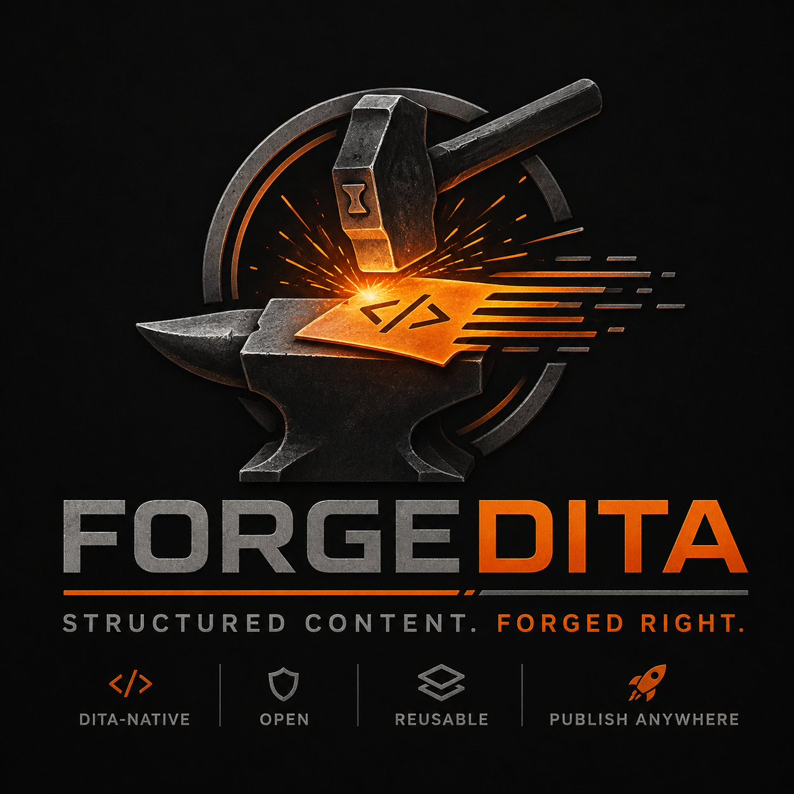

Preserve the source
DITA topics, maps, subject schemes, DITAVAL files, catalogs, and assets should remain clean and exportable.
Industry reality
ForgeDITA exists for organizations that want cleaner architecture, predictable publishing, native XML preservation, and infrastructure that becomes more maintainable over time instead of less.
Standards-first
A practical look at modern DITA architecture, workflows, and platform design.
DITA support should mean native XML preservation, specialization-aware processing, graph-aware resolution, public conformance claims, and clean export.

“Supports DITA” can mean almost anything if nobody asks follow-up questions. It might mean import. It might mean publish. It might mean the product understands enough XML to survive a demo.
That is not good enough for teams running real structured content operations. DITA support should be bounded, test-backed, and specific.
ForgeDITA’s position is simple: never claim more than the product can prove. That may sound less flashy, but it is the only sane way to build trust.
Practical take
DITA topics, maps, subject schemes, DITAVAL files, catalogs, and assets should remain clean and exportable.
Keys, conrefs, xrefs, maps, subject schemes, and impact analysis are not side quests. They are the CCMS core.
A DITA system that only understands base element names is not ready for serious specialized content.
A public conformance statement beats a vague compliance slogan every time.
Early access
ForgeDITA is moving toward MVP for teams that want native XML, Oxygen-first workflows, reproducible publishing, and fewer platform headaches.
Talk to ForgeDITA